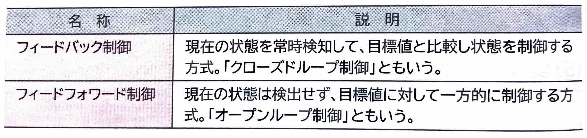
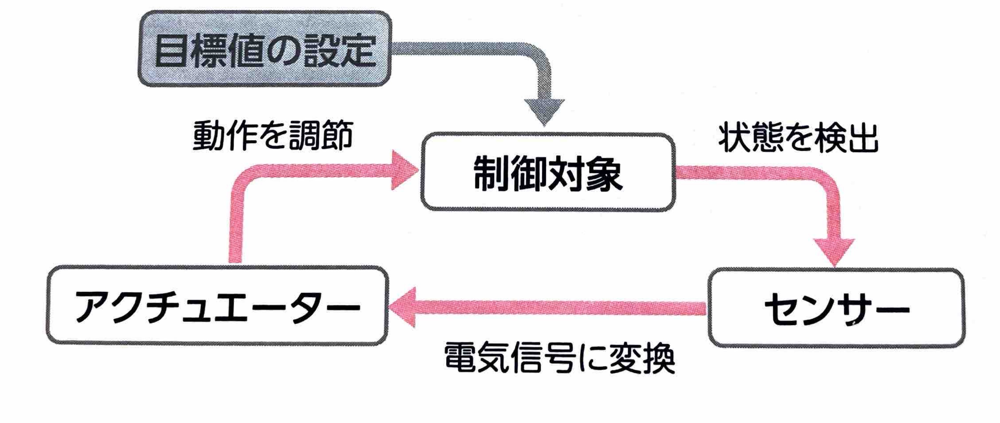
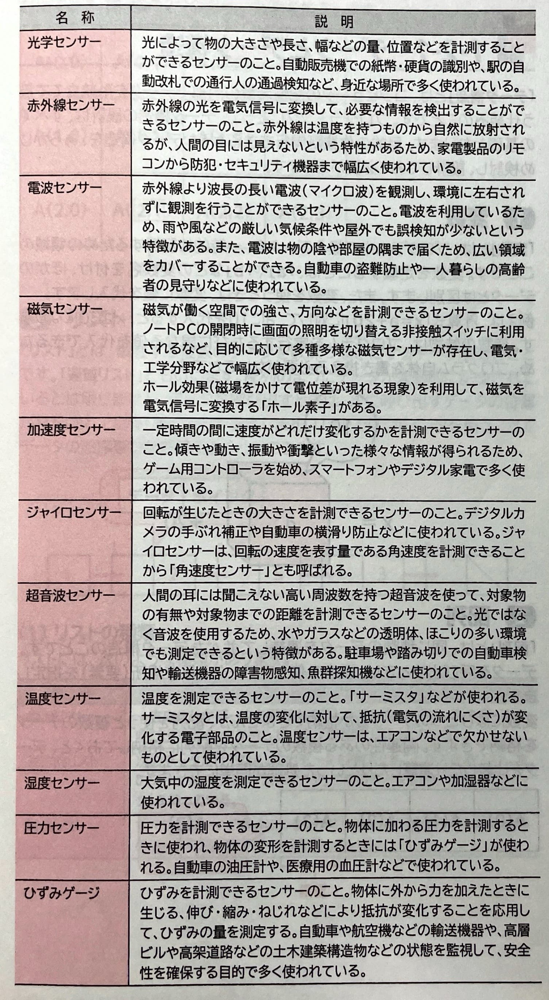

表示
｢制御｣
とは、対象となるものを動作させ、目標値に向かってコントロールすることです。
(2)制御の仕組み｢センサー｣
で検出して、コンピュータが処理しやすい機械的な電圧や電流、抵抗などの電気信号に変換します。｢アクチュエーター｣
は、電気信号を受けて機械的な動作に変換し、制御対象を一定の状態に保つなどの制御を行う装置です。｢応答特性｣
や、処理を安定して動作させるための｢制御安定性｣
が必要になります。
(3)センサーの種類｢センサー｣
とは、光や温度、圧力などの変化を検出し計測する機種のことです。センサーは多くの機器の搭載され、エアコンの温度や風量を調整したり、ガスコンロの過熱を防止したりするなどの用途で活用されています。